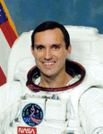

Lyndon B. Johnson Space Center
Houston, Texas 77058
|
National Aeronautics and Space Administration Lyndon B. Johnson Space Center Houston, Texas 77058 |
 |
Biographical Data |
||
Carl E. Walz (Colonel, USAF, Ret.)
NASA ASTRONAUT (FORMER)
PERSONAL DATA: Born September 6, 1955, in Cleveland, Ohio. Married to the former Pamela J. Glady of Lyndhurst, Ohio. They have two children. He enjoys piano and vocal music, sports.
EDUCATION: Graduated from Charles F. Brush High School, Lyndhurst, Ohio, in 1973; received a bachelor of science degree in physics from Kent State University, Ohio, in 1977, and a master of science in solid state physics from John Carroll University, Ohio, in 1979.
ORGANIZATIONS: American Legion, Kent State University Alumni Association, John Carroll University Alumni Association, Association of Space Explorers.
SPECIAL HONORS: Graduated Summa Cum Laude from Kent State University. Awarded the Defense Superior Service Medal with one Oak Leaf, the USAF Legion of Merit, the USAF Meritorious Service Medal with one Oak Leaf Cluster, the Defense Meritorious Service Medal with one Oak Leaf, the USAF Commendation Medal, and the USAF Achievement Medal with one Oak Leaf Cluster. Distinguished Graduate from the USAF Test Pilot School, Class 83A. Inducted into the Ohio Veterans Hall of Fame. Awarded four NASA Space Flight Medals, NASA Distinguished Service Medal, NASA Exceptional Service Medal, Distinguished Alumnus Award, Kent State University, 1997, Alumni Award, John Carroll University, 2002, Diocesan Award, Catholic Diocese of Houston/Galveston 2002, Gagarin Award, National Aeronautic Association, 2003.
EXPERIENCE: From 1979 to 1982, Walz was responsible for analysis of radioactive samples from the Atomic Energy Detection System at the 1155th Technical Operations Squadron, McClellan Air Force Base, California. The subsequent year was spent in study as a Flight Test Engineer at the USAF Test Pilot School, Edwards Air Force Base, California. From January 1984 to June 1987, Walz served as a Flight Test Engineer to the F-16 Combined Test Force at Edwards Air Force Base, where he worked on a variety of F-16C airframe avionics and armament development programs. From July 1987 to June 1990, he served as a Flight Test Manager at Detachment 3, Air Force Flight Test Center.
NASA EXPERIENCE: Selected by NASA in January 1990, Walz is a veteran of four space flights, and has logged a total of 231 days in space. He was a mission specialist on STS-51 (1993), was the Orbiter flight engineer (MS-2) on STS-65 (1994), was a mission specialist on STS-79 (1996), and served 196 days in space as flight engineer (FE-1) on ISS Expedition-Four (2001-2002). Carl also served as the Director for the Advanced Capabilities Division in the Exploration Systems Mission Directorate at NASA Headquarters in Washington D.C. He was responsible for a broad range of activities to include Human Research, Technology Development, Nuclear Power and Propulsion and the Lunar Robotic Exploration Programs to support the Vision for Space Exploration. He retired from NASA on December 5, 2008 to pursue interests in the private sector.
SPACE FLIGHT EXPERIENCE: STS-51 Discovery (September 12-22, 1993). During the mission, the five member crew deployed the U.S. Advanced Communications Technology Satellite (ACTS), and the Shuttle Pallet Satellite (SPAS) with NASA and German scientific experiments aboard. Walz also participated in a 7-hour space walk (EVA) to evaluate tools for the Hubble Space Telescope servicing mission. The mission was accomplished in 9 days, 22 hours, and 12 minutes.
STS-65 Columbia (July 8-23, 1994). STS-65 flew the second International Microgravity Laboratory (IML-2) spacelab module, and carried a crew of seven. During the 15-day flight the crew conducted more than 80 experiments focusing on materials and life sciences research in microgravity. The mission completed 236 orbits of the Earth, traveling 6.1 million miles, setting a new flight duration record for the Shuttle program.
STS-79 Atlantis (September 16-26, 1996). On STS-79 the six member crew aboard Atlantis docked with the Russian MIR station, delivered food, water, U.S. scientific experiments and Russian equipment, and exchanged NASA long duration crewmembers. During the mission, the Atlantis/Mir complex set a record for docked mass in space. STS-79 was the first flight of the double Spacehab module, and landed at KSC after 10 days 3 hours and 13 minutes.
Expedition 4 (December 5, 2001 to June 19 2002). The Expedition-4 crew launched on December 5, 2001 aboard the Space Shuttle Endeavour, STS-108, and docked with the International Space Station on December 7, 2001. During their 196 days in space, the Expedition-4 crew of three (two American astronauts and one Russian cosmonaut) performed flight tests of the station hardware, conducted internal and external maintenance tasks, robotic control tasks, and conducted numerous experiments in a variety of scientific disciplines. Wearing the Russian Orlan spacesuit, Walz logged 6 hours of EVA time with Commander Yury Onufrienko as they continued the outfitting of the Russian-supplied Docking Compartment (DC). In addition, Walz logged 5 hours 52 minutes of EVA time in the U.S. EMU spacesuit in his second spacewalk with flight engineer Dan Bursch, preparing the ISS for the S0 truss, delivered by the STS-110 crew. The Expedition-4 crew also performed a Soyuz relocation from the FGB nadir to the DC nadir hatch to prepare for the arrival of a new Soyuz capsule. The Expedition-4 crew returned to Earth aboard STS-111, with Endeavour landing at Edwards Air Force Base, California, on June 19, 2002.
DECEMBER 2008